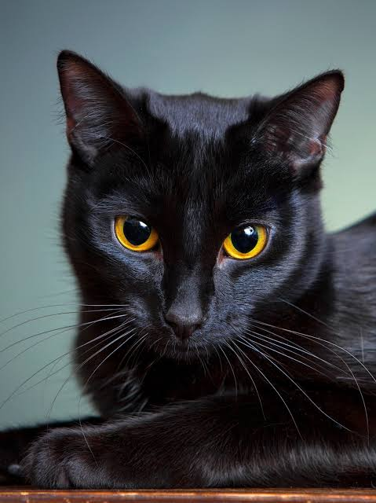

Luna
Dócil, carinhosa e apaixonada por lugares quentinhos. Ótima com crianças e outros gatos.
✔ Vacinada · Castrada · Vermifugada · Microchip
Quero adotar o(a) LunaCarinhosos e cheios de personalidade, procuram um lar seguro e acolhedor.

Dócil, carinhosa e apaixonada por lugares quentinhos. Ótima com crianças e outros gatos.
✔ Vacinada · Castrada · Vermifugada · Microchip
Quero adotar o(a) Luna
Brincalhão, sociável e cheio de energia. Ideal para famílias animadas.
✔ Vacinado · Castrado · Vermifugado
Quero adotar o(a) MingauJanelas e varandas precisam de telas para a segurança do gato.
Arranhadores e esconderijos ajudam o gato a se sentir seguro.
Cada gato tem seu tempo. Com carinho, a confiança chega.
Adote, apadrinhe, doe ou seja voluntário. Cada gesto devolve esperança a quem só conheceu o abandono.